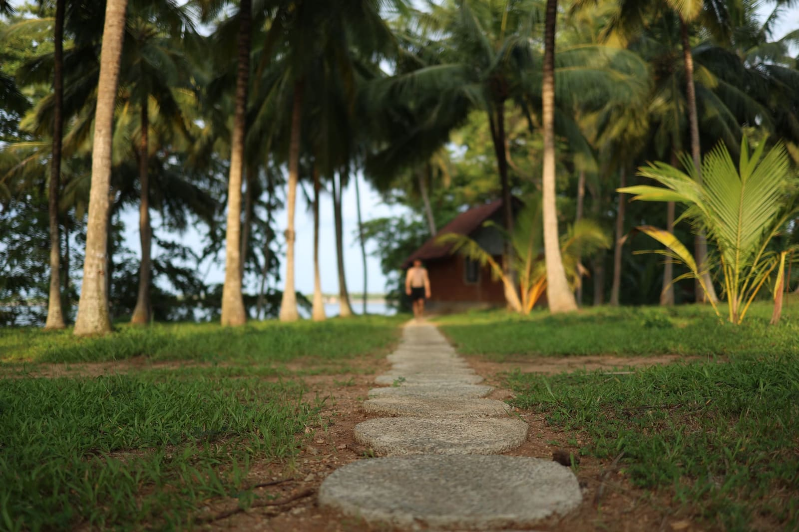
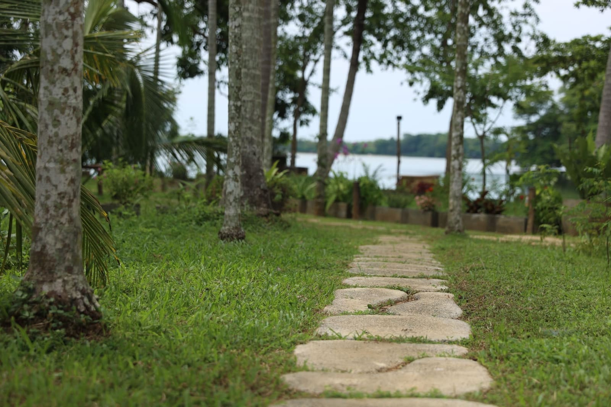
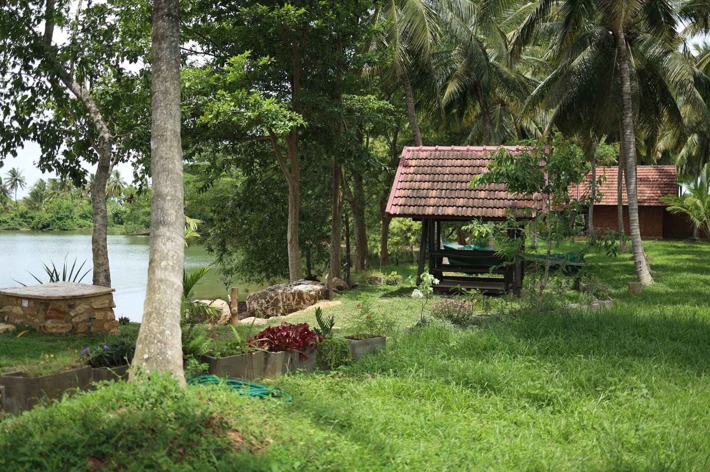
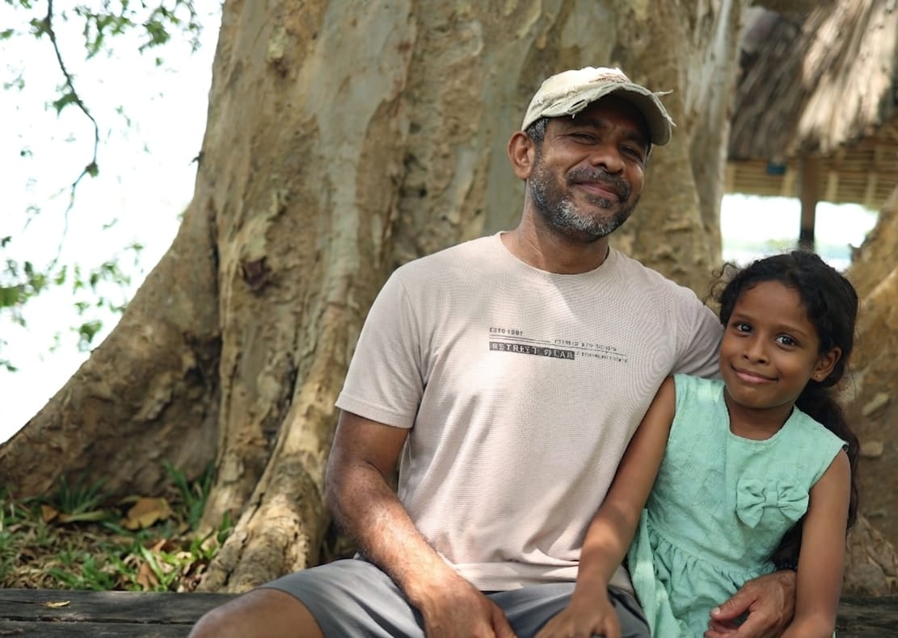
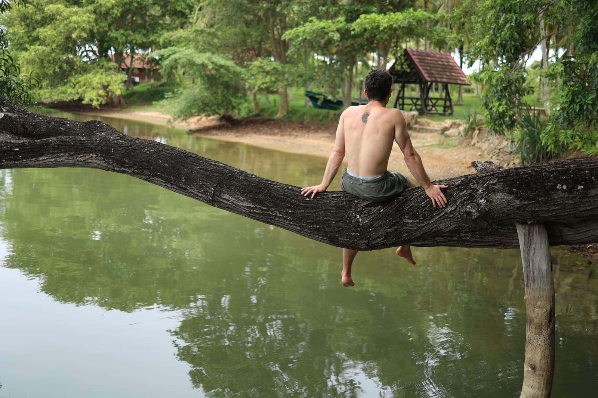
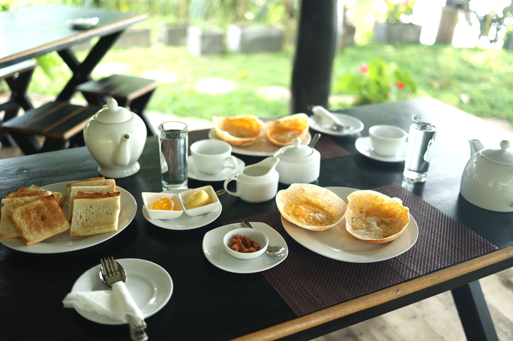
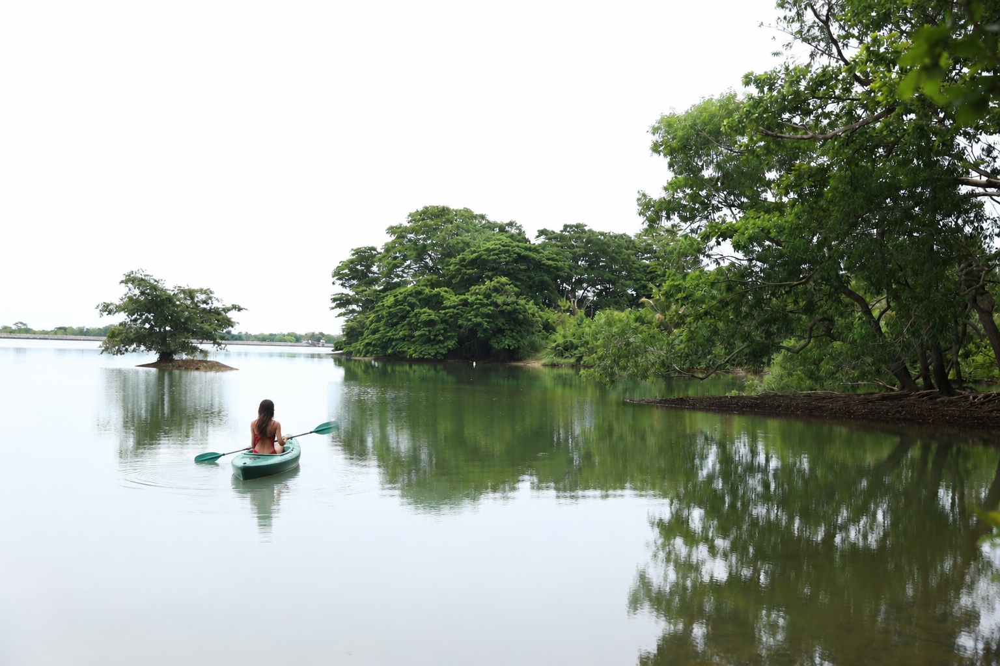
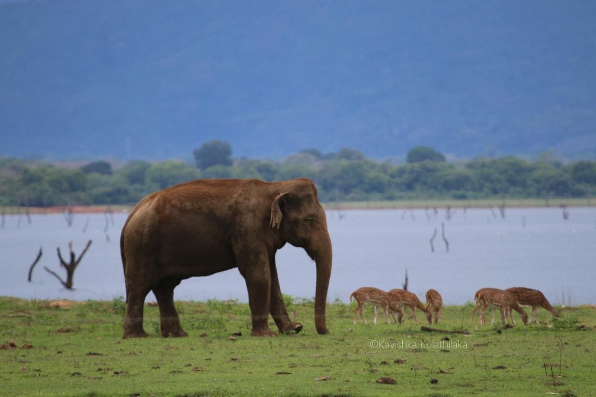
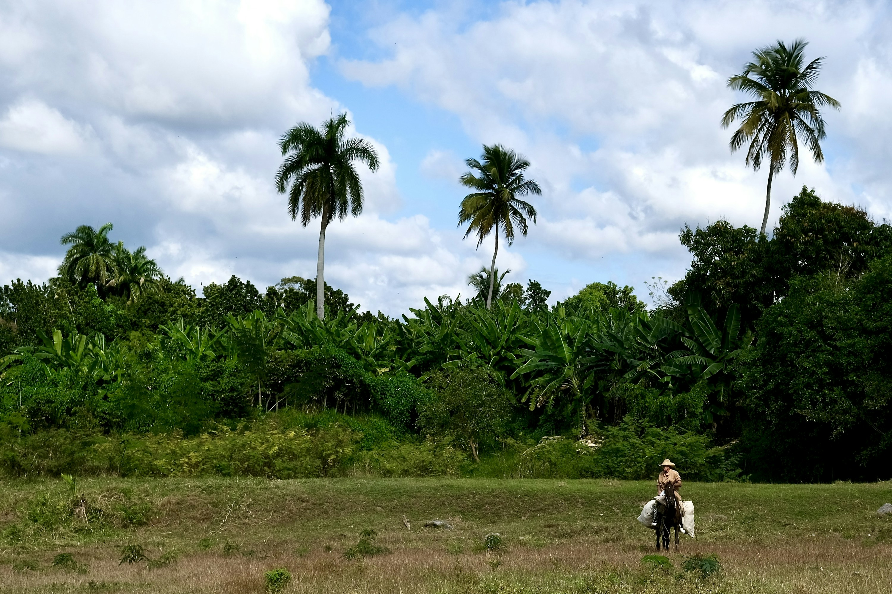

Arrive at sunset
Settle into your cottage. Mango on the veranda. Dinner under the stars. Fireflies after.

Wake up to your private lake
Sleep in a fruit orchard.
Wake up to the lake.
Fifteen acres of tropical fruit — mango, banana, rambutan, dragon fruit. A lake at the edge of the orchard. Four private cottages, each one set back in the trees.
About the farm

By 2018, Ajith's farm was ranked Sri Lanka's #1 commercial fruit farm. Then 2020 came, and the orchard nearly broke him. He didn't sell. He built four cottages between the trees instead — and twenty years of caring for this land became something you can sleep in.
"When guests come, they are happy. So I am also happy."
Read his full storyEach cottage is completely separate — your own entrance, your own veranda, your own view of the lake. Raw concrete, handmade teak bed, and a bathroom open to the sky.
See all photosThe cottages sit at the edge of the lake, surrounded by fruit trees. Mist on the water in the morning. Fireflies at night.
Explore the farmSwipe through Day 1 → 3

Settle into your cottage. Mango on the veranda. Dinner under the stars. Fireflies after.

Kayak before breakfast. Walk the orchard. Optional Udawalawe safari in the afternoon.

Late breakfast. One last swim. A bag of mangos for the road.
Breakfast is real Sri Lankan home cooking — hoppers, dal, sambol, fresh fruit from the farm, eggs, tea. Coffee and toast if you'd rather start lighter.
For full board, just say the word the day before — three home-cooked meals: rice, curry, fish, fresh fruit from the trees outside.
Plan your stay

Swipe through 3 ways to explore

Aji has kayaks on the lake. Take one out at dawn — the water is flat and the farm is still quiet.

Elephant country. Big herds, open grassland. The jeep picks you up here — Aji arranges it.

A nearby local horse farm offers riding experiences and hikes through the area. Ask Aji for details and to arrange a visit.
"This was probably the best Airbnb we've ever stayed at. The calmness and nature are breathtaking. The highlight is the bathroom with open sky — and the fireflies by night."— Sarah & Felix, Germany
Aji replies within a day · questions welcome